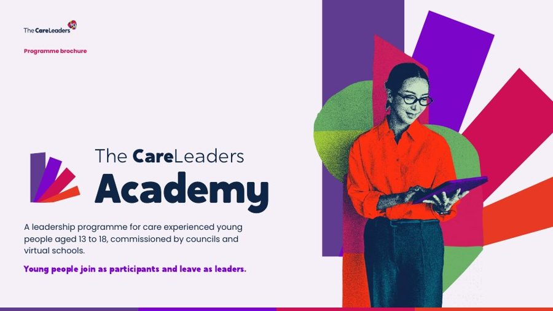

Leadership programme for care-experienced young people aged 13 to 18Young people with care experience become care leaders.
A leadership programme for care-experienced young people aged 13 to 18, commissioned by councils. Young people build the skills and confidence to take part in service delivery, service improvement, co-design and the other ways a council listens to the people it looks after.
The Academy, in short
What we offer, what we do, what you get and what it is for.
The offer
A programme of about 12 to 14 weeks that upskills a group of care-experienced young people aged 13 to 18 in the things a council needs them for: speaking, co-design, service improvement, training staff and influencing decisions.
What we do
We audit what your council needs, build the programme around it, run a six to 12-week recruitment campaign, deliver one or two days of training, and support young people into live opportunities in your council.
What you get
A trained group of young people ready to take part in service delivery, improvement and co-design, and every material we made, handed over to keep.
What it achieves
Young people’s experience shaping real decisions, and young people leaving with skills and experience they can evidence.
Young people join as participants and leave as leaders.
Most councils want young people’s voices in their services. Fewer give young people the skills and the platform to lead. The Academy does both. It upskills care-experienced young people in the areas a council needs them, so they can take part in service delivery, improvement and co-design as equals.
What the Academy sets out to do
Three objectives, for every young person on the programme.
Skills
Leadership skills with evidence behind them: speaking, co-design, training and influencing.
Confidence
The confidence to use their experience, on their own terms and safely.
Opportunity
Live roles in service delivery, improvement and co-design, so young people’s voices shape real decisions.
At a glance
Turning care experience into leadership. A programme that upskills care-experienced young people to take part in how their council works.
- Who it’s forCare-experienced young people aged 13 to 18
- How longAbout 12 to 14 weeks, in five stages
- TrainingOne or two days, face to face
- Group sizeUp to 20 young people per facilitator
- ModulesUp to six, chosen from the skills audit
- RecruitmentA six to 12-week digital marketing campaign
- Commissioned byCouncils and virtual schools
- Yours to keepNothing we build stays ours
How it works: five stages
From the first audit to young people taking part in your council takes about 12 to 14 weeks.
- 1
Skills audit
About four weeks. We find out what your council needs young people’s help with, and what young people want to learn.
- Where young people can lead in your council
- The modules that fit your cohort
- 2
Programme build
About two weeks. We build the programme around the audit.
- A training plan for your cohort
- The roles young people will take on, agreed with you
- 3
Recruit
A six to 12-week digital marketing campaign to reach young people in your area.
- Social and digital assets
- A worker toolkit
- Materials for young people
- 4
Training
One or two days, face to face.
- Up to three modules a day
- Rehearsal and co-facilitation on two-day programmes
- 5
Take part
Young people step into live roles in your council.
- Service delivery, improvement and co-design
- Evidence they can use on a CV or UCAS form
The six modules
One day covers up to three modules. Two days cover all six, with time to rehearse and co-facilitate. Choose any module to see what it covers.
Public speaking and keynotes
Young people learn to plan, write and deliver a talk to an audience of professionals, from a short introduction at a meeting to a keynote at a conference.
Young people practise
- Structuring a talk
- Speaking with confidence in front of a room
- Handling questions
Sharing your story safely
How to use your own experience to make a point, while deciding what to share, what to keep private and how to look after yourself afterwards. Sharing a story is always a choice.
Young people practise
- Choosing what to share and what not to
- Linking a story to a message
- Looking after themselves after speaking
How your council really works
Who makes decisions in a council, how services for children in care are run and paid for, and where young people can have a say.
Young people practise
- Mapping who decides what
- Finding the right person to influence
- Understanding the corporate parent role
Co-design and service improvement
How to work alongside staff as equals to look at a service, spot what could be better and design changes together.
Young people practise
- Looking at a service from the user’s side
- Generating and testing ideas
- Working with staff as equals
Training the workforce
How to plan and co-deliver training for staff, such as social workers or foster carers, using what young people know about care.
Young people practise
- Planning a short session
- Running an activity with a group
- Co-facilitating with a trainer
Leading and influencing in meetings and panels
How to prepare for a meeting or panel, get a point across and influence a decision, including when the room is full of senior professionals.
Young people practise
- Preparing for a meeting
- Making a case clearly
- Following up so things happen
Getting young people through the door
Getting care-experienced young people to engage with an opportunity like this is the hardest part, and we plan for it. We build a six to 12-week digital marketing campaign in four parts, hand every asset to an administrator in your council, and they send it out on a schedule we set. The aim is simple: young people turn up.
Social and digital assets
Posts, graphics and copy, scheduled week by week across a six to 12-week campaign, ready for your channels.
Worker toolkit
What social workers, personal advisers and carers need to talk to young people about the Academy, because a trusted adult asking is what gets a young person there.
Young person materials
Information written for young people, so they know what they are signing up to.
Handed to your administrator
We make everything. One person in your council sends it out, to a schedule, and we check in on sign-ups.
Safe by design
Young people are sharing real experience in a room of professionals. We plan for that from the start.
- Enhanced DBS checks for every facilitator
- We work within your council’s safeguarding framework
- Trauma-informed facilitation throughout
- Sharing your story is always a choice
- Consent, check-ins and clear routes for any disclosure
- We contract the room with young people at the start
What everyone gets
For young people
- Skills in speaking, co-design, service improvement, training and influencing
- Material for a CV or UCAS form
- Real examples to talk about at interview
- A bridge into education, training or work after 16
- A place in how their council works
For your council
- A trained group of young people ready for service delivery, improvement and co-design
- Young people who can co-design, train staff and sit on panels as equals
- A six to 12-week recruitment campaign with all its assets
- Session plans and materials, handed over to keep
- Train the trainer on request, so your team can run it again
- A pathway into The Care Leaders Fellowship as young people get older
How to commission it
Book a call
A 30-minute call to talk through your young people and what you need.
Get a proposal
We send a proposal within five working days.
Start
Raise a purchase order and we can start within two weeks.
Previous work
Young people leading in councils we’ve worked with.

Regional Care Cooperative, South East: Youth Participation Collective
A regional network of participation workers, and a Shadow Board of 18 Youth Ambassadors, named and branded by young people themselves.
Read the case study
Buckinghamshire Council: Youth Voice Bucks
A participation service young people named, branded and shaped. 19 champions from 11 service areas.
Read the case study
Liverpool Virtual School: Rising Futures
A conference young people helped build. 5 young people designed and ran their own workshop.
Read the case studyQuestions commissioners ask
Who can take part?
Care-experienced young people aged 13 to 18 in your area. You decide with us who the programme is for.
How many young people can join?
Up to 20 young people per facilitator.
How long does it take?
About 12 to 14 weeks from the skills audit to young people taking part in your council.
One day or two?
One day covers up to three modules. Two days cover up to six, plus time to rehearse and co-facilitate.
Do young people have to share their story?
No. Sharing your story is always a choice, and we teach young people how to decide what to share.
Can our own staff run it again?
Yes. Train the trainer is available on request, and nothing we build stays ours.
How do we commission it?
Book a 30-minute call. We send a proposal within five working days, and once you raise a purchase order we can start within two weeks.
Download the Academy brochure
The 12 weeks in full: the skills audit, the six modules and workbooks, the recruitment campaign and what your council keeps.
Thank you. Your brochure is downloading.
If it didn’t start, open the brochure here.

Talk to us about starting an Academy
Tell us about your service and what you need, and we’ll reply within 3 working days.